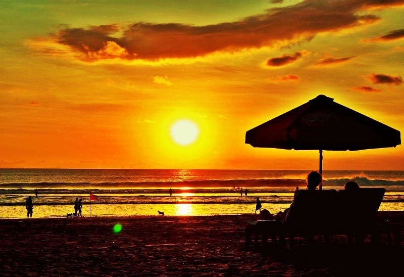

Tentang Kuta Beach
Kuta Beach terkenal dengan pantainya yang luas dan ombak yang cocok untuk berselancar. Di sepanjang pantai, terdapat banyak restoran, bar, dan toko-toko yang menawarkan berbagai macam barang dan makanan. Tempat ini juga terkenal dengan kehidupan malamnya yang meriah.

Matahari Terbenam di Kuta Beach
Kuta Beach adalah tempat yang sempurna untuk menikmati matahari terbenam. Pantai ini menawarkan pemandangan yang luar biasa saat matahari terbenam, menarik banyak wisatawan setiap sore.

Berselancar di Kuta Beach
Ombak di Kuta Beach sangat cocok untuk berselancar, baik bagi pemula maupun peselancar berpengalaman. Tersedia banyak sekolah selancar yang menawarkan pelajaran bagi para wisatawan.